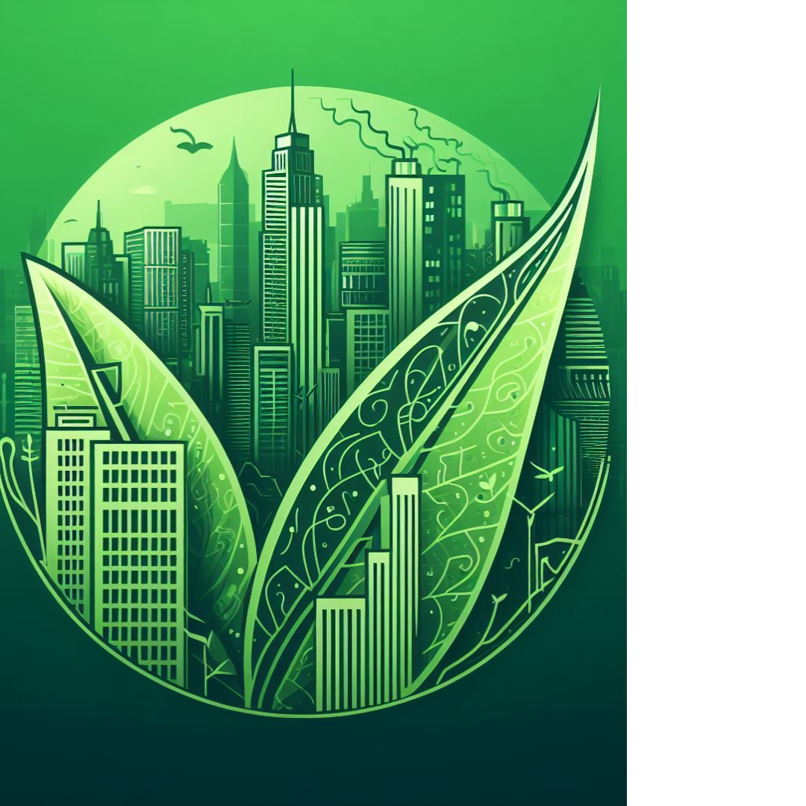
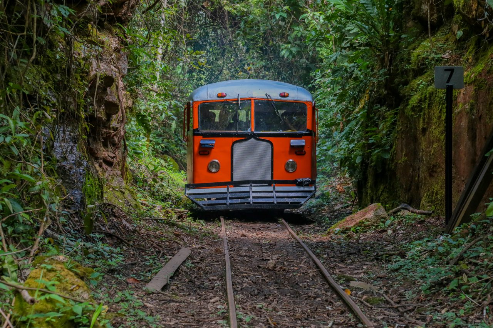

Notícias da Amazônia

Notícias rápidas
Brasil apoia denúncia da África do Sul contra Israel por genocídio
Qual notícia você quer ver em 2024?
Equador: saiba o balanço de prisões, mortes e apreensões do conflito interno de 2024

Notícias
Após estiagem extrema, Acre pode enfrentar nova enchente no início de 2024.
A seca histórica no Amazonas confirma o descaso das autoridades públicas sobre qualquer efeito das mudanças climáticas.
Dados inéditos mostram que os nove países amazônicos perderam um milhão de hectares de superfície de água na última década
Maioria assembleia legislativa aprova projeto de lei que aumentará os conflitos agrários e os desmatamentio no Maranhão